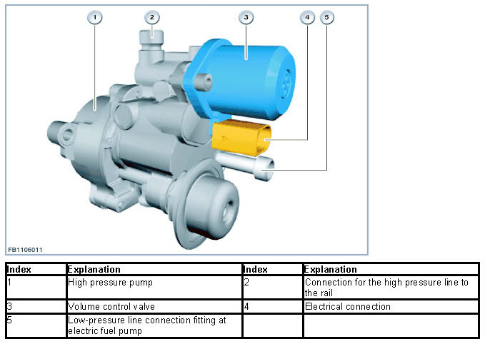
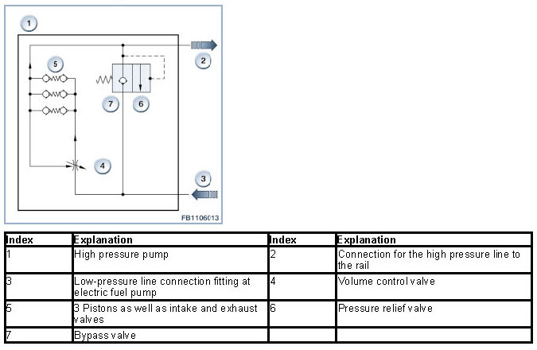
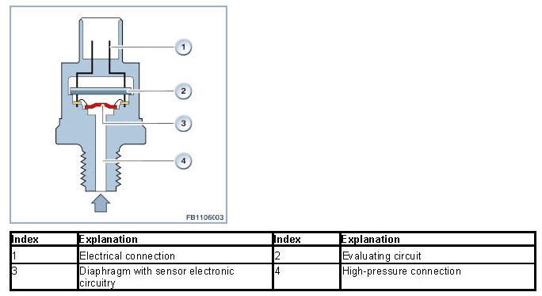
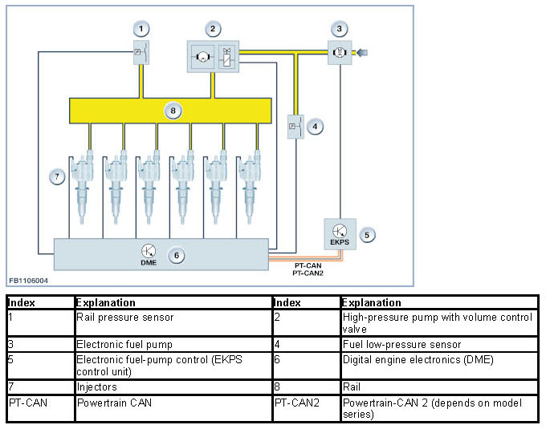

High-Pressure Fuel System
High-Pressure Fuel System
High-pressure fuel system
Petrol engines with direct fuel injection have a low-pressure fuel system (fuel tank, electric fuel pump) and a high-pressure fuel system (high-pressure fuel pump, flow-control valve, rail with rail-pressure sensor).
Brief component description
The following components are described:
- High pressure pump
- Rail with rail-pressure sensor
High pressure pump
The high-pressure fuel pump boosts the fuel pressure (range from 50 to 200 bar) and supplies fuel to the rail. The high-pressure pump is bolted onto the rear end of the vacuum pump. The drive shaft of the high-pressure pump is connected to the drive shaft of the vacuum pump.

The volume control valve controls the fuel delivery pressure in the rail. The volume control valve is activated via a pulse-modulated signal (PWM signal) from the DME control unit. The PWM signal determines the throttle opening while also adjusting the fuel supply to provide the correct delivery rate for the engine's current load factor. In addition, there is the possibility to reduce the pressure in the rail. When a defect such as failure of a rail-pressure sensor is diagnosed in the system, electrical power to the flow-control valve is deactivated. The fuel then reaches the rail via a so-called bypass valve.

The volume control valve is a component of the high-pressure pump and can be removed during service.
Rail with rail-pressure sensor
In the rail, the fuel is stored temporarily, then distributed to the injectors.
The rail-pressure sensor measures the current fuel delivery pressure in the rail.

The high-pressure connection allows the pressurized fuel to reach the diaphragm with its electronic sensor circuitry. The electronic sensor circuitry converts the changes in the diaphragm's shape into an electrical signal. The evaluating circuit processes the signal and forwards an analogue voltage signal to the DME. The voltage signal rises in linear form with increasing fuel delivery pressure.
The signal from the rail-pressure sensor is an important input signal of the DME for activation of the volume control valve (component of the high-pressure pump). If the rail-pressure sensor fails, the volume control valve is activated in emergency operation by the DME.
System functions
The following system functions are described:
- Supply of fuel in line with requirements
Supply of fuel in line with requirements

The low-pressure fuel sensor transmits a voltage signal to the engine-management control unit (DME control unit) indicating the system pressure between the electric fuel pump and the high-pressure pump. The low-pressure fuel sensor monitors system pressure (low-pressure fuel system) upstream from the high-pressure pump.
The DME control unit runs a continuous comparison between the specified pressure and actual pressure. If there is a deviation between the specified pressure and actual pressure, the DME control unit increases or decreases the voltage for the electric fuel pump, sent as a message across the PT-CAN to the EKP control unit. The EKP control unit converts the message into an output voltage for the electric fuel pump. These regulates the required delivery pressure for the engine (or high-pressure pump).
In the event of a signal failure (fuel low pressure sensor), with terminal 15 On the electric fuel pump is operated with pre-control. If the CAN bus fails, the electric fuel pump is operated via the EKP control unit with the prevailing on-board supply voltage.
The high-pressure pump raises the fuel pressure to between 50 and 200 bar. The high-pressure line delivers the fuel to the rail. In the rail, the fuel is stored temporarily, then distributed to the injectors. The rail-pressure sensor measures the current fuel delivery pressure in the rail. When the volume control valve in the high-pressure pump opens, the excess fuel delivered is returned to the inlet. If the high-pressure pump fails, restricted driving is possible.
Notes for Service department
General notes
WARNING: Always ensure that the engine is cold before working on the fuel system.
At coolant temperatures above 40 °C, fuel can emerge at high speed when the injectors are loosened.
Not responsible for printing errors, mistakes and technical changes.